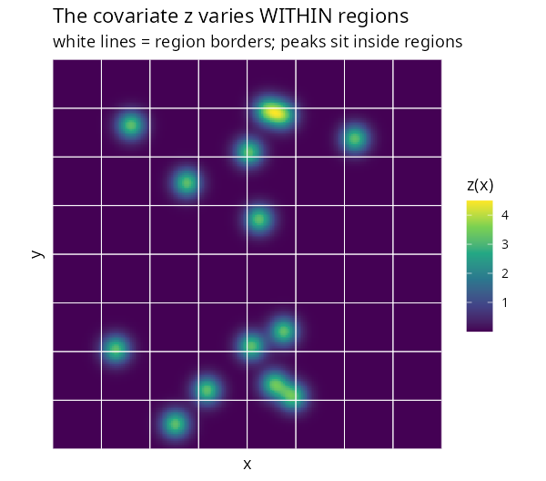
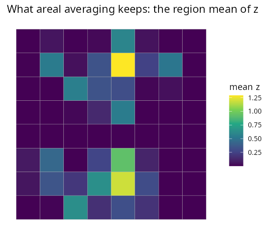
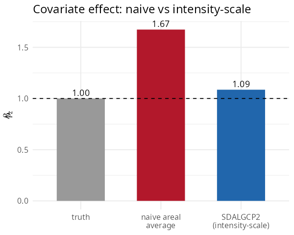

2. Spatially continuous (raster) predictors
Source:vignettes/raster-covariates.Rmd
raster-covariates.RmdA covariate often varies within each areal unit —
elevation, distance to a road, pollution from point sources. The usual
shortcut is to average it over each polygon and put the average into a
Poisson model. Under the nonlinear log link this is
biased. This tutorial shows why, and how
SDALGCP2 does it correctly. It is self-contained.
The problem, precisely
A region’s expected count under the log-Gaussian Cox process is
a sum over candidate points
inside
with weights
.
The covariate enters inside the exponential. Factor it
out:
The region’s covariate contribution is
the log-sum-exp
,
not
with
the areal mean. By Jensen’s inequality the two differ whenever
varies within the region, and a regression on
is biased for
— badly so when sharp features (e.g. point sources) sit inside regions.
Full derivation: math/raster-covariates-derivation.pdf.
The data
A covariate z with sharp peaks (think pollution
sources), supplied as a terra::SpatRaster, plus outcome
counts over an 8×8 lattice. The peaks sit inside regions, so
the region mean loses them:
library(SDALGCP2)
library(sf)
library(terra)
set.seed(3)
# a raster covariate with 14 sharp Gaussian peaks
r <- rast(xmin = 0, xmax = 20, ymin = 0, ymax = 20, resolution = 0.08)
xy <- xyFromCell(r, 1:ncell(r))
src <- matrix(runif(2 * 14, 1, 19), ncol = 2)
values(r) <- rowSums(sapply(seq_len(nrow(src)), function(s)
3.2 * exp(-((xy[, 1] - src[s, 1])^2 + (xy[, 2] - src[s, 2])^2) / 0.5)))
names(r) <- "z"
sh <- st_sf(geometry = st_make_grid(
st_as_sfc(st_bbox(c(xmin = 0, ymin = 0, xmax = 20, ymax = 20))), n = c(8, 8)))
N <- nrow(sh)
# simulate counts from the point-level intensity model (true beta_z = 1)
pts <- sda_points(sh, delta = 0.5, method = 3); w <- lapply(pts, function(p) p$weight)
Z <- lapply(pts, function(p) cbind(1, terra::extract(r, as.matrix(p$xy))[, "z"]))
b_true <- sapply(seq_len(N), function(i) log(sum(w[[i]] * exp(as.numeric(Z[[i]] %*% c(-6, 1))))))
sh$pop <- round(runif(N, 2000, 6000))
sh$cases <- rpois(N, sh$pop * exp(b_true))
sh$zbar <- sapply(seq_len(N), function(i) sum(w[[i]] * Z[[i]][, 2])) # areal mean| The raster covariate (varies within regions) | What areal averaging keeps |
|---|---|
 |
 |
The right panel — the region mean — has washed the peaks out.
Fitting: naive vs intensity-scale
The naive analysis regresses counts on the areal mean:
naive <- glm(cases ~ zbar + offset(log(pop)), poisson, st_drop_geometry(sh))
coef(naive)["zbar"]
#> 1.67 <- 67% too largeSDALGCP2 instead reads z from the raster at
the candidate points and uses the log-sum-exp offset. Pass the raster;
sh does not even need a z column:
fit <- sdalgcp(cases ~ z + offset(log(pop)), data = sh, rasters = r)
coef(naive)["zbar"]; fit$beta_opt["z"]#> Estimate of beta_z:
#> truth 1.00
#> naive areal average 1.67 (+67% bias)
#> SDALGCP2 (intensity-scale) 1.09
Averaging the predictor over polygons overstates the effect by two-thirds; aggregating on the intensity scale recovers it.
When does it matter?
Because , the bias is driven by the within-region variance of . It is large when that variance is correlated with the region mean — sharp, localised features such as point sources. For smooth covariates the two approaches nearly agree, and either is fine.